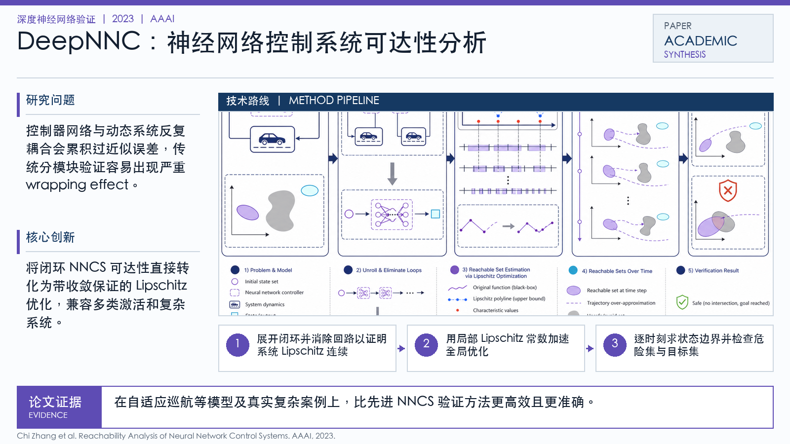

Problem
解决的问题
控制器网络与动态系统反复耦合会累积过近似误差，传统分模块验证容易出现严重 wrapping effect。
Verification on DNNs · 2023 · AAAI
Reachability Analysis of Neural Network Control Systems
Problem
控制器网络与动态系统反复耦合会累积过近似误差，传统分模块验证容易出现严重 wrapping effect。
Value
在自适应巡航等模型及真实复杂案例上，比先进 NNCS 验证方法更高效且更准确。
Paper-grounded Academic Summary
该代表页依据原文摘要、贡献段与方法图注生成。方法视觉由 ImageGen 按论文证据逐篇绘制，中文研究问题、技术路线、创新点与实验结论采用确定性排版，以保证内容与字符准确。
打开原文 PDF
Technical Route
Innovation